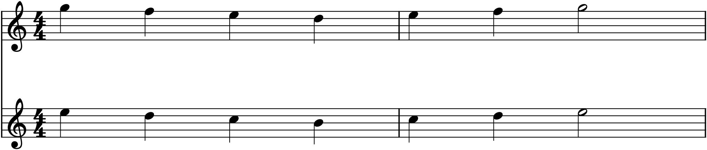
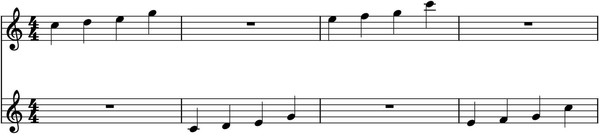

The piano gave you two hands under one player’s control; counterpoint gave you the art of independent lines in the abstract. Now put them together and hand them to two people: a duet, the smallest true ensemble. Two instruments is a deceptively rich medium — chamber music’s most intimate — because with only two voices there is nowhere to hide and every note of each part is exposed. The whole craft comes down to one goal: give each instrument something genuinely worth playing, and let the two of them converse — trading, echoing, and singing together — rather than reducing one to a mere accompanist for the other.
29.1Two instruments, two parts
Writing for two instruments means writing two separate parts, each on its own staff — not a grand staff for one player, but a small score, one line per performer. You might pair two of the same instrument (two violins, two flutes), or two different ones (violin and cello, flute and guitar); the pairing sets the colour and the range. Each instrument has its own comfortable range and character — a subject Part 6 takes up in detail — so for now simply keep each part within a singable, playable compass and let the higher instrument tend to take the melody while the lower supplies bass and harmony, swapping when you want variety. The two figures in this chapter use two treble instruments, but the principles hold for any pair.
29.2Ways for two instruments to relate
Two lines can relate in a handful of characteristic ways, and a good duet moves among them rather than staying in one:
- Melody and accompaniment — one instrument sings, the other supports with a bass or broken-chord figure (the homophony of Chapter 21, split between two players).
- Independent counterpoint — two real melodies at once, the art of Chapter 28, each satisfying alone.
- Harmonized, in parallel — both playing the same rhythm a consonant interval apart, a sweet, blended sound.
- Call and response — the instruments alternate, one answering the other’s phrase.
- Imitation — one instrument echoes a figure the other has just played.
The first two you already know. The last three are the distinctively duet textures — the ones that make two instruments feel like a conversation — so we look at them here.
29.3Singing together: harmonized motion
The simplest way to make two instruments sound rich is to have them play the same line a consonant interval apart — usually in parallel thirds or sixths, the intervals that blend most sweetly (Chapter 9). Both move in the same rhythm and direction, harmonizing each other.

The parallel thirds of Figure 29.1 are consonant and lovely — recall that only parallel fifths and octaves are forbidden (Chapter 14); parallel thirds and sixths are not just allowed but a staple. This texture sacrifices independence for sweetness, and it is perfect for a warm moment; used constantly, though, it grows cloying, because the two instruments are really only playing one idea. Reserve it, and it shines.
29.4Conversation: call and response, and imitation
The opposite of moving together is taking turns, and it is what makes two instruments feel like two characters. In call and response (or antiphony), the instruments alternate — one plays a phrase, the other answers — so the music passes back and forth like dialogue. In imitation, closely related, one instrument states a figure and the other echoes it a moment later, the same idea handed from one voice to the next (the device at the root of the canon and the fugue, Chapter 28).

The dialogue in Figure 29.2 shows why this is the heart of ensemble writing: the two instruments are neither leader-and-accompanist nor locked in parallel, but equal partners in a conversation, each with its own moment. When the echo overlaps — the second instrument beginning before the first has finished — call-and-response becomes true imitative counterpoint, and if the second copies the first exactly all the way through, you have a canon, or round, like “Frère Jacques.” A duet that converses this way holds interest far longer than one where a single melody simply sits atop a support.
29.5Sharing the melody
The single most important habit in writing for two instruments — and the one beginners most often miss — is this: do not leave the melody in the same instrument the whole time. Pass it back and forth. Let the violin sing while the cello accompanies, then give the tune to the cello and let the violin decorate above it. This sharing of the foreground is what keeps both parts worth playing and keeps the texture alive; a player consigned to accompaniment for a whole piece is a wasted resource, and a listener notices the monotony. The exchange need not be constant, but over the course of a duet each instrument should have its turn in the light. This is, again, the conversational principle: in a good conversation, both people get to speak.
29.6Register and balance
With only two lines, keeping them clear is mostly a matter of register. Give the two instruments room — generally the melody instrument above, the supporting one below, with enough space between them that neither muddies the other (the low-register caution of Chapter 27 applies to the lower instrument). You can cross them — send the lower instrument briefly above the higher — for a special effect or to hand over the melody, but do it deliberately, not by accident, since crossed parts can confuse the ear about who is who. And mind the natural balance: a cello and a flute are not equally loud, and a busy accompaniment can bury a gentle tune, so keep the supporting part simpler and lower when the melody is delicate. Two well-spaced, well-balanced lines will always sound better than two crowded ones.
In MuseScore
A two-instrument score is a two-staff score with a separate instrument on each staff — and MuseScore can play it, balance it, and print each player’s part.
- Create the score with two instruments: File ▸ New, then add two instruments (two of the same, or a pair like Violin and Cello). Each gets its own staff, correctly clefed.
- Write each part on its own staff, and use the textures above — harmonize in thirds, trade phrases, imitate a figure from one instrument in the other a bar later.
- Balance and audition in the Mixer (F10): mute one instrument to check the other alone, and adjust volumes so the melody is never buried.
- Extract the parts with File ▸ Parts — MuseScore generates a separate, printable part for each player from the one score, which is exactly what real performers read from.
Try it: create a duet for two instruments and write a short passage three ways — first in parallel thirds (Figure 29.1), then as call-and-response with the melody passed between them (Figure 29.2), then with the two trading who leads and who accompanies. Play each, and hear how much more alive the conversational versions feel. That conversation, scaled up to four instruments, is the subject of the next chapter.